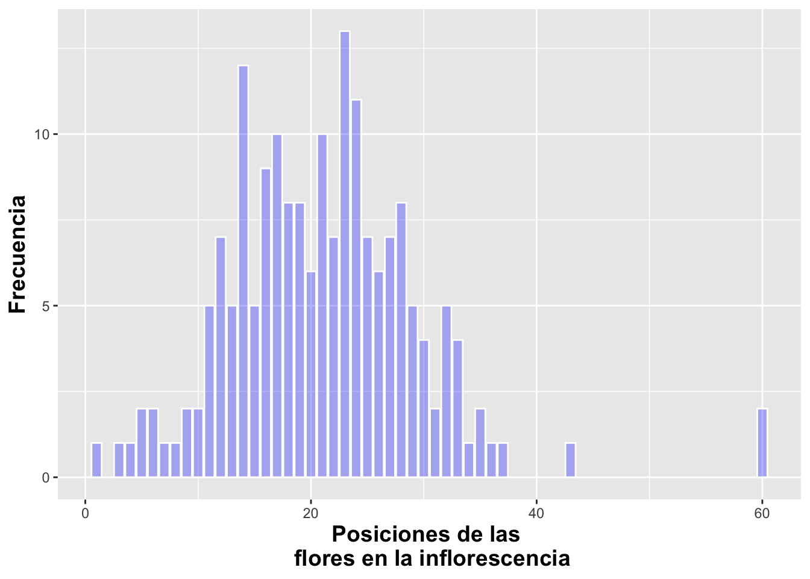

Gráficos de barras con geom_bar
Fecha de la ultima revisión
## [1] "2024-02-22"

## ── Attaching core tidyverse packages ──────────────────────── tidyverse 2.0.0 ──
## ✔ dplyr 1.1.4 ✔ readr 2.1.5
## ✔ forcats 1.0.0 ✔ stringr 1.5.1
## ✔ ggplot2 3.4.4 ✔ tibble 3.2.1
## ✔ lubridate 1.9.3 ✔ tidyr 1.3.1
## ✔ purrr 1.0.2
## ── Conflicts ────────────────────────────────────────── tidyverse_conflicts() ──
## ✖ dplyr::filter() masks stats::filter()
## ✖ dplyr::lag() masks stats::lag()
## ℹ Use the conflicted package (<http://conflicted.r-lib.org/>) to force all conflicts to become errors##
## Attaching package: 'janitor'
##
## The following objects are masked from 'package:stats':
##
## chisq.test, fisher.test##
## Attaching package: 'gridExtra'
##
## The following object is masked from 'package:dplyr':
##
## combineUna variable discreta: Gráfico de barras con geom_bar
El gráfico de barras es una representación de la frecuencia de ocurrencia de eventos para valores discretos; por ejemplo, sí o no, o valores categóricos. La función geom_bar genera un gráfico que tabula la cantidad de veces que ocurre un evento. La altura de las barras representa el número de observaciones de una categoría discreta representada en el eje de X.
En el siguiente ejemplo, primero removeremos los NA del archivo usando drop_na(), es el función que excluye todas las filas que contienen los NA. Nuevamente utilizaremos el archivo de datos de la Dipodium rosea:
# DW$Number_of_Flowers # Antes de hacer los análisis mira los datos, y vea que hay muchas filas con **NA**, remueve **#** para activar la función.
# Method 1
head(DW)## # A tibble: 6 × 21
## tree_number tree_species dbh plant_number ramet_number distance orientation
## <int> <chr> <dbl> <int> <int> <dbl> <dbl>
## 1 1 E.o 75 1 1 2.47 40
## 2 1 E.o 76 2 1 1.97 50
## 3 2 E.o 76 3 1 1.95 350
## 4 3 E.o 58 4 1 3.24 210
## 5 4 E.o NA 5 1 0.85 80
## 6 5 E.o 59 6 1 2.62 160
## # ℹ 14 more variables: number_of_flowers <int>, height_inflo <int>,
## # herbivory <chr>, row_position_nf <int>, number_flowers_position <int>,
## # number_of_fruits <int>, perc_fr_set <dbl>, pardalinum_or_roseum <chr>,
## # fruit_position_effect <int>, frutos_si_o_no <int>,
## # p_or_r_infl_lenght <chr>, num_of_fruits <int>, species_name <chr>,
## # cardinal_orientation <int>Cambio de intensidad de color con alpha
Se puede cambiar la intensidad del color de las barras usando alpha. los valores pueden variar de 0 a 1, donde 1 es mas intenso el color, aquí se utiliza un alpha=0.3.
## # A tibble: 6 × 21
## tree_number tree_species dbh plant_number ramet_number distance orientation
## <int> <chr> <dbl> <int> <int> <dbl> <dbl>
## 1 1 E.o 75 1 1 2.47 40
## 2 1 E.o 76 2 1 1.97 50
## 3 2 E.o 76 3 1 1.95 350
## 4 3 E.o 58 4 1 3.24 210
## 5 4 E.o NA 5 1 0.85 80
## 6 5 E.o 59 6 1 2.62 160
## # ℹ 14 more variables: number_of_flowers <int>, height_inflo <int>,
## # herbivory <chr>, row_position_nf <int>, number_flowers_position <int>,
## # number_of_fruits <int>, perc_fr_set <dbl>, pardalinum_or_roseum <chr>,
## # fruit_position_effect <int>, frutos_si_o_no <int>,
## # p_or_r_infl_lenght <chr>, num_of_fruits <int>, species_name <chr>,
## # cardinal_orientation <int># [df(fila,columas)]
b=ggplot(DW[!is.na(DW$number_of_flowers),],
aes(number_of_flowers))
b+geom_bar(alpha=.3,
fill="blue",color="white")+
xlab("Posiciones de las \n flores en la inflorescencia")+
ylab("Frecuencia")+
theme(axis.title=element_text(size=14,face="bold"))

Figura: Lepanthes eltoroensis, EL Yunque, Puerto Rico
- Seleccione el archivo “Lelto” en el paquete “ggversa”. Seleccione la
variable adultos o juvenil, que representa la cantidad de plantas adulto
o juvenil que se encuentra en el árbol. Los datos son de una pequeñita
orquídea que esta limitado las veredas del “El Toro” y de los “Vientos
Alizios” en el Yunque.
- Mire el nombre de las columnas primero
- Cambie de color las barras
- Cambie el nombre de los nombres de los ejes
- Salva el gráfico con extensión de .png
- Sube el gráfico a MSTeam
Multiples grupos
Ahora le añadiremos una variable discreta que representa las frecuencias de las plantas con frutos y la frecuencia de plantas sin frutos para las posiciones de la flor en la inflorescencia. En el script se observa que la variable Frutos_si_o_no se identifica como un factor. Esto es necesario porque en el archivo de datos la presencia de frutos y flores fue identificada como 1 o 0 o sea valores numéricos. Si se hubiera identificado como Sí o No, no habría la necesidad de identificar que es un factor. En tal caso, es necesario identificar que estos valores son una categoría usando factor. El gráfico presenta las variables discretas una sobre la otra. Note en la Figura al igual que con geom_histogram, la frecuencia del segundo grupo es añadida a la frecuencia del primer grupo.
DW%>%
select(fruit_position_effect,frutos_si_o_no )%>%
drop_na(fruit_position_effect)%>%
ggplot(aes(fruit_position_effect))+
geom_bar(aes(fill=factor(frutos_si_o_no)))+
xlab("Posiciones de las \n flores en la inflorescencia")+
ylab("Frecuencia")+
theme(axis.title=element_text(size=14,face="bold"))+
scale_fill_manual(values = c("green", "#36211D"))+
scale_color_manual(values = c("yellow", "blue"))## Tree Trail Distance Alt_m Angulo Rango_rad Localizacion Inclinacion DBH
## 1 203 Tw 0 780 260 4.535556 230 50 18.1
## 2 204 Tw 228 783 158 2.756222 220 40 23.2
## 3 205 Tw 38 783 90 1.570000 30 30 10.6
## 4 206 Tw 28 785 355 6.192778 250 40 10.8
## 5 209 Tw 47 790 340 5.931111 260 55 14.1
## 6 210 Tw 7 790 350 6.105556 180 30 11.4
## Plantulas Juveniles Adultos T_Num Lado_vereda lat long
## 1 6 21 5 32 izquierda 18.2875 -65.80417
## 2 7 12 7 26 izquierda 18.2925 -65.80580
## 3 2 2 0 4 derecha 18.2922 -65.80670
## 4 6 21 5 32 izquierda 18.2919 -65.80640
## 5 5 10 0 15 derecha 18.2911 -65.80780
## 6 0 10 8 18 izquierda 18.2914 -65.80780Posicionar las barras uno al lado del otro
Para presentar los grupos uno al lado del otro se usa el parámetro position =“dodge”, lo que hará que cada grupo quede posicionado contiguamente. Además, removeremos la leyenda con guides(fill=FALSE) como se muestra a continuación con los datos de la Dipodium rosea:
DW%>%
select(fruit_position_effect,frutos_si_o_no )%>%
drop_na(fruit_position_effect)%>%
ggplot(aes(fruit_position_effect))+
geom_bar(aes(fill=factor(frutos_si_o_no)),color="white",
position = "dodge")+
xlab("Posiciones de las flores en la inflorescencia")+
ylab("Frecuencia")+
guides(fill=FALSE)+
theme(axis.title=element_text(size=14,face="bold"))## Warning: The `<scale>` argument of `guides()` cannot be `FALSE`. Use "none" instead as
## of ggplot2 3.3.4.
## This warning is displayed once every 8 hours.
## Call `lifecycle::last_lifecycle_warnings()` to see where this warning was
## generated.Posicionar las barras una encima de la otra
En el próximo gráfico, la frecuencia de ambos grupos comienza en cero pero aún saldrán sobrepuestos uno al otro usando position=identity
DW%>%
select(fruit_position_effect,frutos_si_o_no )%>%
drop_na(fruit_position_effect)%>%
ggplot(aes(fruit_position_effect))+
geom_bar(aes(fill=factor(frutos_si_o_no)),color="white",
position = "identity")+ # Para que cada grupo comience en cero
xlab("Posiciones de las flores en la inflorescencia")+
ylab("Frecuencia")+
guides(fill=FALSE)+
theme(axis.title=element_text(size=14,face="bold"))
Porcentaje porporcional a todos los valores
Para mostrar el porcentaje de cada uno de los grupos, tenemos que usar una fórmula para calcular la proporción por grupo usando y=(..count..)/sum(..count..). Así la suma de todas las barras equivale al 100%. Vemos que en las categorías altas (que aparecen más a la derecha en el gráfico) algunas barras están más anchas. Esto se debe a que, en el archivo de datos, para algunas de estas posiciones de las flores en la inflorescencia no hay información para la segunda especie (la que aparece en azul). Esto se puede resolver añadiendo la información en el archivo original.
fill=factor(Frutos_si_o_no)
DW%>%
select(fruit_position_effect,frutos_si_o_no )%>%
drop_na(fruit_position_effect)%>%
ggplot(aes(fruit_position_effect))+
geom_bar(aes(y=(..count..)/sum(..count..),
fill=factor(frutos_si_o_no)),
color="white", position="identity")+ # Para que cada grupo comience en cero se usa position = "identity"
xlab("Posiciones de las flores en la inflorescencia")+
ylab("Frecuencia")+
guides(fill=FALSE)+
theme(axis.title=element_text(size=14,face="bold"))## Warning: The dot-dot notation (`..count..`) was deprecated in ggplot2 3.4.0.
## ℹ Please use `after_stat(count)` instead.
## This warning is displayed once every 8 hours.
## Call `lifecycle::last_lifecycle_warnings()` to see where this warning was
## generated.
Porcentaje por valos de cada X
Para que cada barra represente el 100% de los grupos en el eje de X, se usa el parámetro position=“fill”. En el siguiente ejemplo se le añade la variable discreta en este caso; o sea, si la planta tiene frutos (verde) o no (rojo). Ecologicamente se observa que la posición de las flores arriba (>27) en la inflorescencia resulta en menos frutos porcentualmente que las posiciones más abajo.
## Loading required package: scales##
## Attaching package: 'scales'## The following object is masked from 'package:purrr':
##
## discard## The following object is masked from 'package:readr':
##
## col_factorDW%>%
select(fruit_position_effect,frutos_si_o_no )%>%
drop_na(fruit_position_effect)%>%
ggplot(aes(factor(fruit_position_effect),
fill=factor(frutos_si_o_no)))+
geom_bar(aes(y=(..count..)/sum(..count..)),
position="fill")+ # Para que cada columna sume a 1.0 se usa position = "fill"
xlab("Posiciones de las flores en la inflorescencia")+
ylab("Proporción")+
guides(fill=FALSE)+
theme(axis.title=element_text(size=10,face="bold"))
Seleccione el archivo “Lelto” en el paquete “ggversa”. Seleccione la variable adultos o juvenil, que representa la cantidad de plantas adulto o juvenil que se encuentra en el árbol. Los datos son de una pequeñita orquídea que esta limitado las veredas del “El Toro” y de los “Vientos Alizios” en el Yunque. Primero se va unir las columnas de juvenil con las de adultos, para después hacer un gráfico donde cada columna sume a 1.0 se usa position = “fill”.
– paso 1
head(Lelto)
– paso 2
df=Lelto %>% select(Juveniles, Adultos)
– paso 3
dfLelto = df%>% gather(key=“Estado”, value=“Conteos”) # gather( ) recuerda esta función, siempre me hace dificil encontrarla en el web.
– Mire el nombre de las columnas primero y como esta organiado
- Cambie de color las barras
- Cambie el nombre de los nombres de los ejes
- Salva el gráfico con extensión de .png
- Sube el gráfico a Edmodo
Reordenar las barras con geom_bar
En el siguiente gráfico, reordenamos la secuencia en X por orden del número de flores y su frecuencia. Primero, hay que crear una función para reordenar la variable, la que llamaremos reorder_size. El segundo paso es invocar esta función desde ggplot. La función es aplicable a cualquier variable que uno quisiera ordenar y tener como factor. En la figura podemos observar que en el muestreo hay solamente una planta con la siguiente cantidad de flores (1, 3, 4, 7, 8, 34, 36, 37, 43; extremo izquierda), y hay 13 plantas con 23 flores (extremo derecha) y otras frecuencias de plantas con diferentes cantidades de flores entre medio.
# Aquí se crea una función para re-ordenar la variable X.
reorder_size <- function(x) {
factor(x, levels = names(sort(table(x))))
}
#reorder_size(DW$number_of_flowers)
DW%>%
select(number_of_flowers )%>%
drop_na(number_of_flowers)%>%
ggplot(aes(reorder_size(number_of_flowers)))+
geom_bar(fill="olivedrab")+
scale_y_continuous(breaks=c(0:13))+
labs(y="Número de plantas con la cantidad de flores",
x="Cantidad de flores \n en la inflorescencia")+
theme(axis.title=element_text(size=10,face="bold"))Orden decreciente.
# Aquí se crea una función para re-ordenar la variable X.
reorder_size_D <- function(x) {
factor(x, levels = names(sort(table(x), decreasing = TRUE)))
}
#reorder_size(DW$number_of_flowers)
DW%>%
select(number_of_flowers )%>%
drop_na(number_of_flowers)%>%
ggplot(aes(reorder_size_D(number_of_flowers)))+
geom_bar(fill="olivedrab")+
scale_y_continuous(breaks=c(0:13))+
labs(y="Número de plantas con la cantidad de flores",
x="Cantidad de flores \n en la inflorescencia")+
theme(axis.title=element_text(size=10,face="bold"))Opciones y Parametros de geom_bar:
- ggplot(el archivo de datos, aes(la variable continua))
- geom_bar(stat=bin, x, y, alpha, color, fill, linetype, size)
- alpha: la intensidad del color
- fill: el color de la barra
- color: el color de la línea alrededor de la barra
- linetype: representa el estilo de línea
- size: representa el grosor de la línea
- weight; para modificar el valor original; entonces no sería, por ejemplo, el conteo/suma de los valores si no un valor ponderado (promedio ponderado).